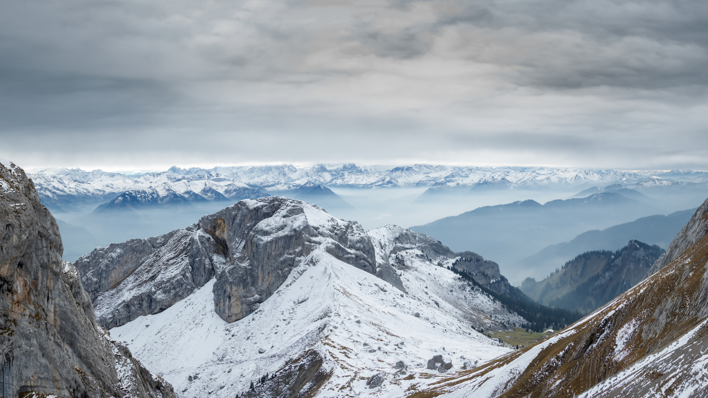
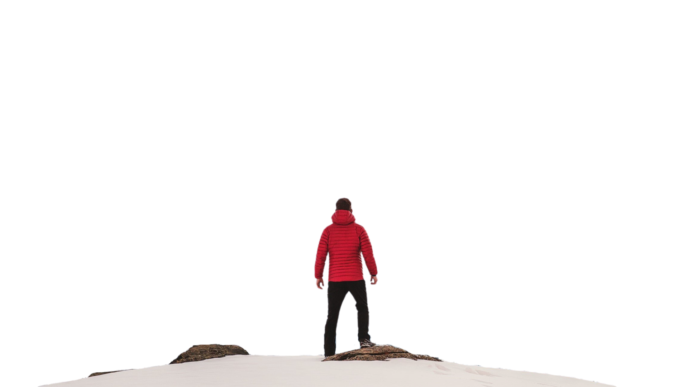

Adventure Time is an animated series set in the magical Land of Ooo, following Finn the Human and Jake the Dog on wild, surreal adventures. Blending humor, fantasy, and emotional depth, it explores friendship, heroism, and growing up through colorful characters, strange worlds, and heartfelt storytelling.
Adventure Time follows Finn the Human and Jake the Dog on surreal adventures across the magical Land of Ooo. Blending humor, emotion, and fantasy, it explores friendship, love, and growth through colorful characters, imaginative worlds, and surprisingly deep storytelling about life and change.
Biking is one of the most exciting and popular outdoor activities in the world. It combines exercise, travel, and adventure in one smooth motion. Riding a bike gives you a sense of independence and freedom that few other things can match. Whether on city streets, country roads, or mountain trails, every journey on a bike feels alive. The wind on your face, the rhythm of pedaling, and the movement of wheels create a feeling of connection with your surroundings. Biking is not just a sport — it’s a lifestyle that promotes health, sustainability, and joy. It strengthens muscles, improves stamina, and keeps the mind active
Many people use biking as a way to explore new places, enjoy nature, or simply escape stress. The sound of spinning wheels and chirping birds becomes music to the rider’s ears. Mountain biking adds an extra thrill, challenging riders to navigate rocky paths and steep hills. On the other hand, road biking focuses on speed, precision, and endurance. Each type of biking offers its own rewards. It’s also an eco-friendly way to travel, reducing pollution and saving fuel. For many, biking is not about competition but about peace, discovery, and pure happiness.
Paragliding is an adventurous sport that allows people to experience the thrill of flying freely through the sky. With just a fabric wing, harness, and the force of wind, paragliders soar gracefully above mountains, valleys, and oceans. It begins with a gentle run down a slope until the parachute-like canopy catches the wind and lifts the pilot into the air. Once airborne, the feeling is indescribable — a mix of excitement, peace, and awe. The world looks different from above, with vast landscapes stretching endlessly beneath your feet. Paragliding is not just about adrenaline; it’s about connecting with nature’s elements — air currents, sunlight, and open space. It teaches focus, patience, and calmness.
Each flight is unique because no two wind patterns are ever the same. Skilled paragliders learn to read the air, rising higher using thermal currents and gliding long distances without engines. It’s a dance between human skill and nature’s power. Safety training and proper gear are essential, but once mastered, paragliding becomes a life-changing experience. It gives people the sensation of freedom — to drift, turn, and soar like a bird. Many enthusiasts describe it as meditation in motion, a perfect balance of thrill and serenity.
Surfing is one of the most exhilarating water sports in the world. It combines balance, skill, courage, and a deep connection with nature. Surfers paddle out into the ocean, waiting for the perfect wave that rises and curls just right. As the wave forms, they stand on their boards and glide across the surface with graceful control. The sound of crashing waves, the salty breeze, and the rhythm of the ocean create a feeling of freedom and peace. Surfing teaches patience, timing, and respect for the power of the sea. Many surfers describe it as a spiritual experience — a moment where they become one with the water.
The ocean can be unpredictable, but that’s what makes surfing so thrilling. Every wave is different, and every ride is unique. It’s a sport that tests both body and mind. Surfers often wake up early to catch the best waves when the water is calm and the light is golden. Over time, they learn to read the ocean — to understand its moods, tides, and patterns. Surfing is not just about skill; it’s about feeling the pulse of nature. Whether in Hawaii, California, or India’s coastal shores, surfers around the world share a common bond. They chase waves not just for fun, but for the joy of freedom and the art of movement.